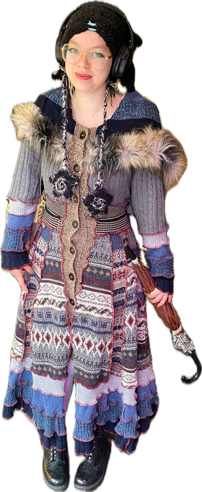

clubs, organizations, volunteer, work history
brand ambassador, passed out merch + advertized the AWS builder center
webdevclub is a super awesome club for the indie web enthusiasts that live inside us.
hosted and ran leadership oriented events + one big manifest event
similar to a brand rep, passed things out, posted to socials, hosted events, those sorts of things
My name is Logan and I am currently a 20 year old living in chicago who is interested in different yarn brands and yarn textures - I like to crochet. I also enjoy a lot of websites on neocities and thus - sparked my love of coding.
I care a lot about making technology feel welcoming. Most of my work lives at the intersection of web development, community organizing, and creative computing, where I get to help other people see what they can build with code.
links look like this ✚ bold text looks like this ✚ italics look like this ✚ underline looks like this more cute textI am a Computer Programming and Software Design student at Columbia College Chicago, an arts-focused school where I've spent a lot of time figuring out how to blend code with collaboration.
For a long time I worked mostly on backend projects and assumed that meant my corner of computing had to be a quiet, lonely one.
But through my extracurriculars, I began seeking out ways to write code with people instead of just for people, and to treat development as a space for shared problem-solving, experimentation, and play.
Now, I am mentoring students through a bug squashing, sketching database schemas, and helping people publish their first websites. I feel most myself when I am helping others grow through computing.
Right now, I spend a lot of time building responsive, user-focused applications using .NET, C#, Blazor, HTML, CSS, and SQL, and thinking about how those tools can support real people and real communities.
I've worked as a Software Development Intern for the Chicago International Puppet Theater Festival, where I helped lead a team of interns building an inventory management web app in Blazor, focusing on data design, MudBlazor components, and cloud hosting.
I also work as a programming tutor, supporting students in HTML, CSS, C#, and game development, and as a club leader, organizing workshops, events, and game jams that invite people into code through play.
Much of my day-to-day practice involves version control, agile workflows, and cloud environments like AWS and Azure, but the through-line is simple: use these tools to make it easier for people to learn, share, and build together.
I care deeply about accessibility, clear communication, and thoughtful collaboration. I like teams where questions are welcome, documentation is kind, and everyone is allowed to learn out loud.
My long-term goal is to keep working on software that supports education, arts, and community spaces—projects where code is not just efficient, but also humane.
When I'm not coding, I'm usually experimenting with new yarn textures and crochet projects, exploring indie web neighborhoods, or coming up with ideas for the next workshop.
If any of this resonates with you, I'd love to connect, swap links, or hear about what you're building.
You can reach out to me on my LinkedIn dms or find more of my work online on github.com/loganrsilvers.
I'm currently open to internships, collaboration on web projects, and opportunities to support community-oriented tech.